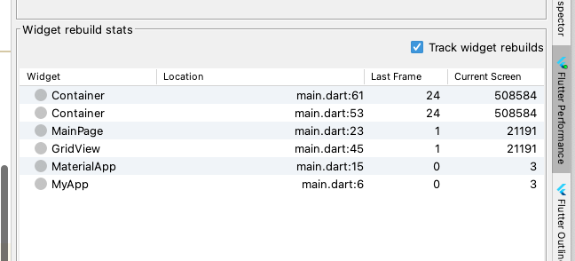
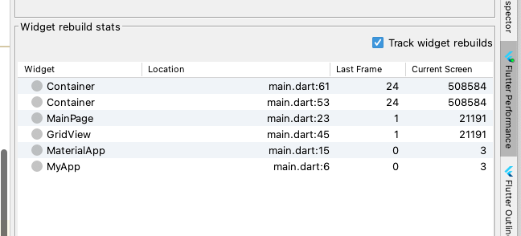

第1节：widget重建优化
本文中的重建指的是调用构造函数生成一个对象，widget重建指的就是调用widget构造函数生成一个对象。
widget 重建由于只是对需求的描述，如果其不会引起element重建的话，性能开销还是非常小的。
1.debug模式下，在android studio 的flutter perfomance 视图中勾选"Track widet rebuilds"可以实时追踪widget的重建次数。

本文中的重建指的是调用构造函数生成一个对象，widget重建指的就是调用widget构造函数生成一个对象。
widget 重建由于只是对需求的描述，如果其不会引起element重建的话，性能开销还是非常小的。
1.debug模式下，在android studio 的flutter perfomance 视图中勾选"Track widet rebuilds"可以实时追踪widget的重建次数。
